01
原则： 代码是中间产物，不是交付结果。看起来已经完成的任务，实际经常会遇到几种情况：需求理解错了，做到一半中断，或者说完成了却无法通过实际验证。
我们平时让 Agent 改代码，经常会收到这样的回复： “代码已经修改，相关测试全部通过。”
但站在开发人员的角度，这句话最多只能说明：Agent 认为自己的实现工作结束了。
任务是不是真的完成，还得继续确认：
它读的是当前生效的代码和接口契约，还是一份已经过期的文档？
测试真的覆盖了这次修改，还是跑错了目录、漏了必测项？
它说“完成了”，有没有测试报告、Review 结果、发布回执或者线上回读可以证明？
只要有一个问题说不清楚，代码就算写出来了，任务也还没有真正完成。
会写代码，解决的是实现问题；能不能完成交付，取决于整个工程环境。
比如让 Cursor 帮忙修改一下项目鉴权逻辑。它可能很快找到代码、完成修改，还补了测试。但如果它参考的是一份旧契约，那么后面做得再快，也只是在错误的方向上继续前进。
即使一开始读对了，任务也可能在中途断掉。Context 被压缩、工具执行失败，或者需要换一个 Agent 做 Review。重新开始以后，如果新的执行者不知道前面为什么这样改、哪些测试已经跑过、还有什么问题没有处理，就只能重新翻代码、重新猜。
最后，即使代码和测试都没有问题，也不能只凭一句“已经完成”接受交付。测试可能跑错目录，报告可能来自上一次执行，代码可能已经发布，但线上实际使用的还是旧版本。没有可以复查的证据，“完成”就只是 Agent 对自己的判断。
这些问题当然不是 Agent 才会遇到，人写代码同样会看错分支、漏跑测试、忘记发布步骤。
区别在于，有经验的开发人员通常会靠项目经验、工作习惯和团队流程，把这些事情补上：
知道哪份资料可信；
知道哪些操作不能直接做；
知道任务中断前要留下记录；
知道上线以后还要回到真实环境确认结果。
但把实现工作交给 Agent，并不代表这些能力也自动交了过去。
因此，当 Agent 写代码越来越快以后，真正影响交付的，往往不再是“它会不会写”，而是项目有没有把下面三件事准备好：
让它读对东西。
Agent 要知道当前生效的是哪份代码、契约和配置，而不是从一堆相关资料里随便挑一份。这是可信上下文。
让规则真的能拦住问题。
“记得跑测试”“修改后要 Review”只是提醒。测试没跑就不能继续、报告过期就不能算通过、权限不足就不能执行，这才是可执行约束。
让任务断了还能接着做。
代码位置、关键决定、验证结果和剩余工作不能只留在聊天记录里。换一个会话、换一个 Agent，也应该知道任务做到哪里。这是可恢复流程。
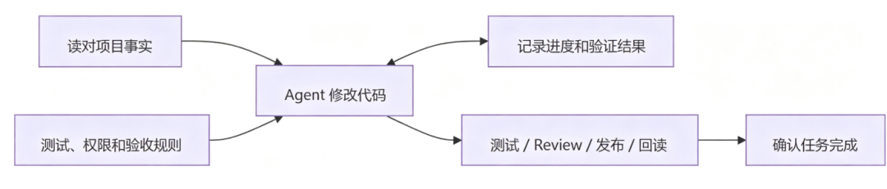
Harness 做的事情，说白了，就是把这些原来需要开发人员一直盯着、记着和判断的事情，放进 Agent 真正工作的环境里。
我们会根据工作流程和习惯，配置各种约束、Prompt、Rule 或 Skill。但这些内容是否真的发挥了作用，还需要通过实际任务结果来确认：
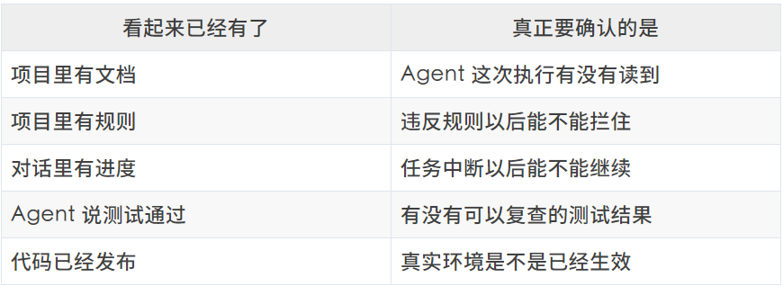
所以，严格意义上来说，我们说的项目 Harness 不是简单地多写几份文档、多加几条 Prompt，或者多做几个脚本。
它真正要解决的是：
让 Agent 开始时不容易读错，执行时不容易跑偏，中断以后还能继续，说“完成”时拿得出证据。
这篇文章接下来要讲的，就是我怎样在真实项目里，一步一步把这样的工作环境搭出来，并在此过程中的思考和体会。
02
可信上下文不是“把相关资料都塞给模型”，而是让 Agent 沿着一条可追溯的证据链，找到当前任务真正需要、可以信任，并且能够回到现实验证的信息。
重点不是建设一个更大的知识库，而是建设一条可信上下文供应链。
图里每一段都不能被“知识已经存在”替代。文档写了，不代表检索能找到；检索找到了，不代表它仍然有效；Agent 使用了，也不代表行动真的改变了现实。
2.1 从 Prompt 到项目知识库：先让隐性约束不再靠猜
还记得最早期，我们会在 Prompt 里塞进角色和纪律，来引导 Agent：
你是一个资深工程师，优先复用已有实现，修改后运行测试 xxxx后来角色、指令、格式、约束和示例慢慢搬进了 CLAUDE.md、AGENTS.md。
这比每次重写 Prompt 稳定，但随着内容越来越多，问题逐渐暴露出来：
占用 Context：任务还没开始，窗口已经被通用说明吃掉一块；
容易过期：代码变了，说明还停在旧版本；
缺少优先级：所有规则平铺在一起，模型分不清哪条是这次任务的硬约束；
难以发现 drift：文档和代码不一致时，通常只能等人偶然撞见。
平时跟 Agent 简单问答，体感可能不明显；但在持续迭代的项目里，靠一句 prompt 很难让 Agent 准确理解你到底要做什么、改到哪为止。Matt Pocock 的 grill-me skill 就是在解决类似问题：用多轮追问逐步澄清意图、边界和决策，帮双方对齐出更完整的任务上下文。
下文把 Wish 作为单个研发任务跨阶段交付的案例，把 ShoppingUI 作为多仓输入、定时执行和外部回读的案例；两者用来说明同一套原则在不同工程边界里的落点。
拿 Wish 项目的端间鉴权改造来说，Agent 光找到某个接口文件是不够的，它至少得回答五个问题：
代码在哪里？ 门户契约、Controller、
CopilotClient和业务调用点分别属于哪一层？接口为什么这样设计？
rod-server发起的是 server-to-server 调用，没有浏览器会话，无法获得 OA Cookie。哪些边界不能破坏？ 只要接口会被
CopilotClient调用，就必须进入免 OA 的接口域。改动会影响谁？ 浏览器调用、
rod-server、门户网关和契约下发是不同的消费方。怎样才算完成？ 先生成契约并完成 xcontract 下发，再确认网关的免 OA 策略已经生效，最后发布并验证
rod-server。
代码能告诉 Agent 当前用了 JWT、staffname 和 oaInvolved，但“服务端为什么补不出 OA” “为什么发布顺序不能反过来”，是代码之外的意图和约束。不把它们沉淀下来，Agent 和新来的同学面对的是同一道题：只能猜。
解决这个问题也很自然：把项目知识整理出来。第一版通常长这样：
project/├── README.md # 项目是什么、怎么跑起来├── AGENTS.md # Agent 硬约束与知识入口├── docs/│ ├── ARCHITECTURE.md # 架构、边界、为什么这样设计│ ├── runbooks/ # 发布、验证、重复操作│ └── ... # 专题文档、决策记录等├── ...└── tests/ # 怎样才算做对
这其实就是最简单的知识库，很多项目根本不需要什么复杂的“AI 知识库”。
我现在反而挺喜欢这种朴素的形式：一份维护良好的文档目录，本身就是很高质量的知识库。所以构建可信上下文的第一步，其实就是先把项目开发过程中发现的隐性知识显式写出来。
代码说明的是系统现在怎么做；项目知识还需要补充为什么这样做、什么不能做，以及改完以后怎么验证。
2.2 知识库是地图，不是百科全书
把隐性约束写进项目，只解决了“知识能被保存”。真正开始端间鉴权改造时，Agent 面对的却是另一个问题：规范、架构文档、CopilotClient、OpenAPI 契约、Controller、业务调用点和测试都已经存在，但这次应该先读什么，又该顺着哪条线继续找？
把知识库做成百科全书、再一次性塞进 Context，不是答案。它不仅浪费窗口，还会让通用说明、历史设计和当前实现并排出现，反而淹没这次任务的关键约束。端间鉴权真正需要的，是先把问题收缩到一条与当前改动直接相关的路径：
端间鉴权规范→ CopilotClient→ openapi.yaml 与对应 Controller→ 真实调用点→ 契约生成、业务码和相关测试
这条路径就是从知识库裁剪出 Context 的过程。知识库像地图，保留项目可能复用的全量知识；Context 只是当前任务正在使用的工作集。 随着 Agent 下钻，这个工作集也会逐步变化：起点只需要项目身份、硬约束和入口；进入目标模块后，再加入相关源码、契约和调用点；到了验证阶段，才需要 diff、测试结果和运行证据。
知识库首先应该是一张地图，设计重点不在容量，而在入口。AGENTS.md 是顶层 Router：它先告诉 Agent 这是什么项目、哪些边界不能破坏、接下来去哪里找。Wish 把这个过程收敛成三跳：
AGENTS.md → context/context.md → 专题文档或源码三层入口不是三份缩短版百科，而是三次收窄问题空间：
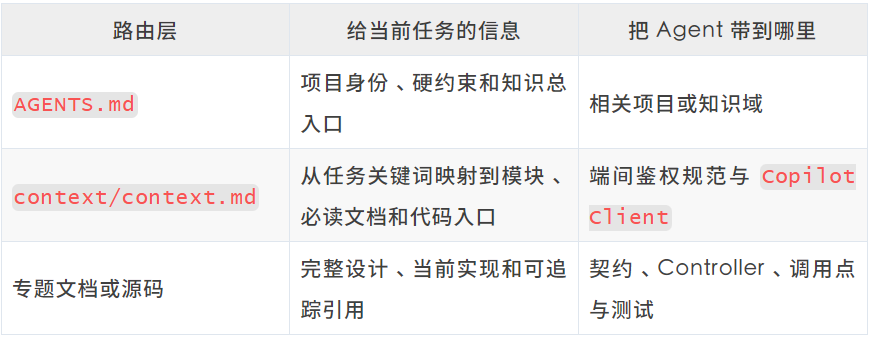
如果任务指向的不是明确模块，而是“以前为什么这么设计”之类的历史经验，knowledge-index.jsonl 再按场景标签提供另一条路由。它只把 Agent 带到 source，不代替原文或源码。同样，Wiki、TAPD 单、仓库 Issue、设计评审和运行日志也可以作为路由的终点；重点不是把它们都抄进一份大文档，而是让入口仍然能回到原始来源。
有了入口，Agent 再像工程师接手陌生项目一样，沿着已经缩小的问题空间继续下钻：
入口文档 → 目录 → 目标模块 → 接口 → 引用 → 测试 → 必要时追历史设计在这条路径上，每一跳都只解决下一个问题：目录确定所有权，模块缩小改动范围，接口和引用串起生产者与消费者，测试说明当前行为如何被验证，只有当实现无法解释设计意图时，才继续追到历史。Context 因此不是事先打包好的资料集，而是 Agent 沿任务路径逐步组装出来的工作集。
好的 Context System 首先是 Navigation System，其次才是 Storage System。
到这里，Agent 已经能顺着地图找到当前任务需要的候选信息。但“找到”仍然不等于“可以相信”：原文是否过期、契约和实现谁更权威、这条证据适用于哪个环境，还要继续判断。这正是下一节要解决的问题。
2.3 找到不等于可信：还要确认来源、版本和适用范围
同一个问题，经常会同时搜到历史文档、当前代码、生成契约和运行记录。它们可能都是真的，却不一定描述同一个时间和执行现场。
ShoppingUI 的一次 Nightly 核查就遇到了这种情况。
当时，本地 Node/XDC 工作区中的 f12e007 已经包含修复。但生成的 Public Contract 仍然来自 9c044649，Nightly receipt 记录的实际输入里也还是 9c044649。
如果只看本地代码，可以得到一个结论：
修复已经存在。
但如果问题是“这次 Nightly 有没有使用这个修复”，真正应该依据的是 Nightly receipt。它支持的结论是：
修复虽然存在于本地，但该次 Nightly 实际消费的还是旧版本。
这两句话并不冲突。第一句描述代码现场，第二句描述运行现场。问题出在我们经常把“某处已经存在”直接说成“当前已经生效”。
一条重要结论不能只留下结论本身，还应该带上它所依赖的现场。把上面的判断整理成一条最小记录，可以写成：
claim: 该次 ShoppingUI Nightly 尚未消费本地修复source: Nightly receiptrevision: 9c044649scope: 该次 Nightly 的 Node/XDC 输入observed_at: receipt 生成时间verification: 对比 receipt 中的 frozen SHA 与修复所在 revision f12e007
这里不是要求所有项目都采用 YAML。它也可以是一行 JSON、一张表，或者文档中的一段固定格式。真正重要的是这些信息没有丢失：
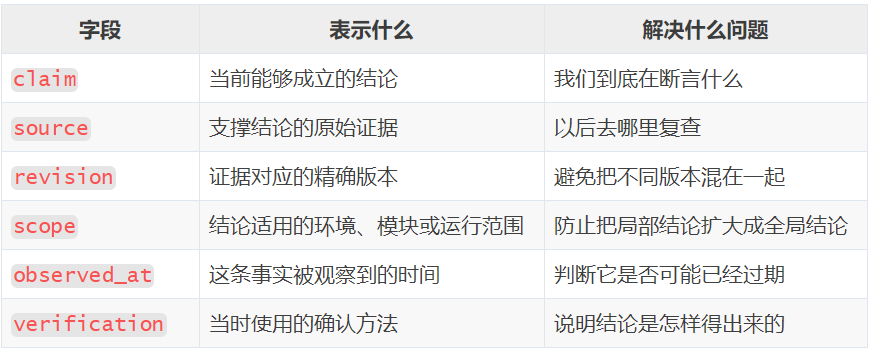
小项目做到这一步通常已经足够。它不需要先建设一套复杂的知识模型，只要重要结论能够回到原始来源，并且说清版本、范围和验证方法。
随着项目变复杂，再根据真实问题增加字段：
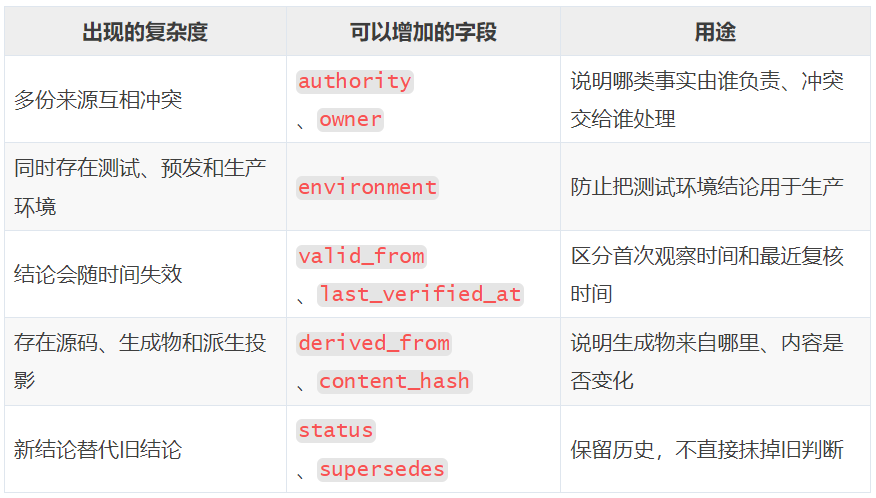
这些字段不应该一次全部加上。只有当项目真的遇到多环境、多人维护、派生投影或历史冲突时，再补对应的信息。
可信不是给一份文档盖上“正确”的章，而是让一条重要结论随时能够回到它依赖的源码、契约或运行证据。
2.4 把一次经验变成下一次可以复用的做法
知识库除了记录“系统是什么”，还要逐渐记录“这个项目通常怎么做”。
ShoppingUI 的知识维护就形成过这样一条路径：
开始任务前，通过
kb:context找到相关项目知识和代码入口；开发过程中，把关键判断重新对照源码、契约和生成物；
修改完成后，运行
kb:check:source，检查源码变化是否已经同步到人读知识；如果任务还涉及 Public Contract、Playground 或多仓输入，再交给 full/nightly 检查继续验证。
这条路径并不是一开始就设计好的，而是从几次具体问题中逐渐形成的：Agent 找到了相关文档，却没有回到源码确认；源码已经修改，人读知识仍停留在旧状态；source-only 检查通过，却被误解成所有派生投影和运行状态都已经收敛。
当相同路径开始反复出现时，它就不应该继续依赖某个熟悉项目的人临场提醒。可以先把它写成 Runbook；如果执行频率继续增加，再把稳定步骤做成 Skill 或脚本；其中能够机械判断、失败后又不应该继续的部分，最后下沉成 Gate。
问题在于，项目怎样主动发现这些值得沉淀的路径？
一个简单办法，是在项目的 AGENTS.md 中加入一段轻量的能力观察规则。它不直接创建 Runbook 或 Skill，只负责在真实任务结束后发现候选：
## 任务后的 Harness 能力观察完成开发、排查、配置、联调或文档任务后，基于本次任务实际发生的过程，做一次轻量的 Harness 能力观察。- 仅在本次会话实际完成了开发、排查、配置、联调或文档任务后执行。- 只在出现明确信号时输出一项：重复劳动、反复纠正、反复找同一上下文、可复用命令、可迁移判断、反复打外部系统、现有 Rule/Skill/MCP/文档缺口。- 无信号则不输出、不扩建。- 有信号时只选证据最充分的一项，说明事实、为何会重复、建议载体（文档 / Runbook / Skill / Script / MCP / Gate）、最小内容和验证方式。- 只建议，不自动改 Rule、Skill 或文档；写入前必须用户确认。
这段规则的价值，是建立的是一条发现机制：当 Agent 反复寻找相同资料、执行相同步骤或者接受同一种纠正时，系统能够意识到，这里可能已经出现了一条值得固化的项目经验。
仍以 ShoppingUI 为例。如果连续几个任务都需要重复执行：
查找相关知识→ 回到源码和契约确认→ 检查人读知识是否同步→ 检查派生投影和运行输入
能力观察就可以把它识别为一个 Runbook 或 Workflow 候选。
如果后续发现其中前三步顺序稳定，但是否需要 full/nightly 仍取决于任务范围，那么最合适的做法可能是：
Runbook 说明完整判断路径；
Skill 根据任务范围决定走到哪一层；
Script 执行确定性的检查；
Gate 只阻断那些已经能够明确判断的失败。
这样，知识库记录的就不再只是“以前发生过什么”，而是“下一次遇到类似任务时，我们怎样做得更稳”。
一次问题先修复；重复出现的路径再沉淀；能够机械判断的部分，最后才变成约束。
至此，可信上下文形成了一条完整但并不复杂的链路：
把隐性知识写下来
→ 让 Agent 沿任务路径找到它
→ 判断来源、版本和适用范围
→ 在真实任务中使用和验证
→ 发现重复路径并沉淀为项目能力
知识能够告诉 Agent 应该怎样做，但如果仍然依赖 Agent 自己想起来执行，就还不能形成约束。
03
可信上下文能告诉 Agent 去哪里找知识、怎样判断它是否可信，以及怎样回到代码和真实系统执行验证。但知道正确做法，不代表每次都能做到。实际工作中，我们经常会在 Prompt 或 Rule 里写：
修改后必须运行完整测试；
不允许直接推送保护分支；
上一步失败以后不能继续修改下游；
没有验证结果就不能说任务已经完成。
Agent 通常能够理解这些要求，也会回答“明白，我会遵守”。但随着任务变长、Context 变多，规则可能被遗漏，也可能被其他指令覆盖。即使没有忘记，Agent 还可能根据自己的执行过程，乐观地判断“应该已经完成了”。
这不是把 Prompt 写得再严厉一点就能解决的问题。
从根本上说，一条规则能不能形成约束，不取决于措辞有多强，而取决于违反它以后会发生什么。
如果条件不满足，任务仍然可以继续，它就只是一句提醒；只有条件不满足时，下一步真的无法进行，它才是可执行的约束。
3.1 从 Prompt 和 Rule 走向确定性的检查
Prompt 和 Rule 适合表达意图、取舍和暂时难以机械判断的边界。它们可以影响 Agent 的选择，也能减少一些明显错误；但它们依赖 Agent 自己理解、记住和执行，最终仍可能变成“自己执行、自己验收、自己宣布完成”。
例如 Agent 说“测试已经通过”，我们仍然不知道：
报告是不是这一次生成的；
测试是不是在正确的代码目录运行；
是不是调用了项目规定的完整测试；
需求里要求验证的场景有没有真正跑到。
继续补一句“请认真测试”不会改变流程。能够明确判断的要求，需要逐步接到执行链上：
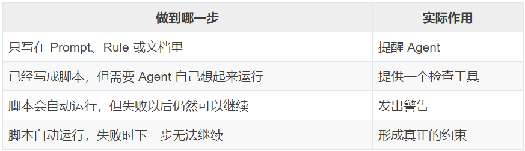
分界点不在“有没有脚本”，而在脚本是否自动进入任务的必经路径、失败是否改变后续状态。下面这些事实就适合交给确定性的程序：
报告有没有生成；
报告是不是本次运行产生的；
测试目录和代码目录是否一致；
必测场景有没有覆盖；
命令是否在操作保护分支；
上一步失败以后，后面是否还在继续写数据。
至于“为什么选择这个方案” “业务边界应该放在哪里”“两种设计哪一种更合理”，仍然需要结合上下文判断，不能简单压成真假条件。
文档负责讲清楚为什么，脚本负责检查有没有做到。
3.2 把检查放在阶段之间：证据不够就不能继续
完整的工程任务往往要经过多个阶段，而且后面的阶段建立在前面的结果之上。
Agent 可以完成需求澄清、方案设计、编码、自测、Review 和交付中的每一步，但每一步做完以后，不能只靠一句“已经完成”进入下一阶段。
测试没有真正完成，Review 看到的就是未经验证的代码；Review 问题没有修复，交付阶段拿到的就是已知有缺陷的结果。
所以，阶段之间需要一道门禁：
上一步没有留下足够的结果，下一步就不能开始。
Wish 的 feature-delivery 就是这样处理测试阶段的。
Agent 完成实现以后，不能只说“测试通过”。进入 Review 前，脚本会检查：
测试报告是否存在；
报告是否由本次任务生成；
测试是不是在本次修改代码的目录中运行；
Agent 是否调用了项目规定的测试入口；
需求中明确要求的场景是否已经生成测试并真正执行。
如果代码改在一个 worktree，测试却在另一个目录运行，即使报告是绿色的，也不能通过。
如果需求里写了必测场景，但没有对应测试；或者测试已经生成，却没有真正运行，同样不能进入下一阶段。
这些检查不代表每一种风险都曾经造成过真实事故。其中一部分是根据已经知道的风险提前补上的防护。
但它们改变了“测试通过”的含义。
以前，“测试通过”是 Agent 对自己工作的总结。现在，它至少要对应本次任务产生的报告、正确的运行目录和实际执行过的测试。
这样，Review 阶段不需要重新猜测前面的测试是否可信，后来的同事也不需要先判断 Agent 那句“已经完成”到底有几分可靠。
门禁真正解决的不是“Agent 会不会测试”，而是：
没有完成测试，就不能把任务推进到下一阶段。
测试、Lint 和 CI 本来就在做类似的事情。社区里的 Harness 和 Agent 评估实践，也都在把更多明确的人工检查变成代码检查，并把这些检查接入 Agent 实际工作的流程。
变化并不是我们发明了一套全新的工程方法，而是当更多步骤由 Agent 完成以后，原有的工程检查也必须覆盖 Agent 真正走过的路径。
3.3 把检查放在动作之前：高风险操作不能先做后补
阶段门禁检查的是“上一步是否真的完成”。
还有另一类约束，处理的是“这个动作能不能执行”。
有些错误可以等做完以后通过测试发现，但有些动作一旦执行，就可能已经破坏代码、分支或者外部数据。
这类问题不能依赖事后 Review，而应该在动作发生前直接拦住。
Wish 中曾经出现过一个很小、但很典型的问题：Agent 拼装 MR 描述时，多次把字面量 \n 直接写进工蜂页面。
这个问题不需要复杂判断。在创建 MR 以前检查一下输入，就能知道描述是不是空的、换行格式是不是错误的。
所以后来再出现这种输入，工具会直接拒绝创建，而不是等错误已经写进页面以后再修。
更危险的操作也是一样：
直接推送保护分支；
强制推送；
跳过项目检查；
执行可能破坏当前代码现场的命令；
未经允许修改 MR 的高风险字段。
这些动作在真正执行以前，就会先经过检查。命中明确风险以后，命令不会继续运行。Agent 说“我会小心”，不能代替这道检查。
ShoppingUI 的夜间任务把同样的思路用到了多仓库和自动修复中。
任务不能随意执行任何命令，只能使用事先登记过的命令和参数；每项修复只能修改声明过的目录；前面的检查失败以后，后面的写入会停下来，不能带着已经发现的问题继续修改下游。
这里的重点不是具体用了哪个配置文件，而是把 Agent 原本很大的操作空间，缩小到当前任务真正允许的范围。
阶段门禁和动作前检查，解决的是两个不同问题：
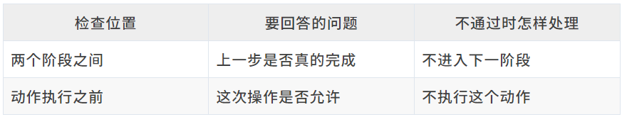
把两者连起来，Agent 的工作过程就不再只依赖“记得遵守规则”：
Agent 准备执行动作→ 先检查动作是否允许→ 执行任务→ 留下测试、报告或运行结果→ 检查上一步是否完成→ 条件满足后进入下一阶段
这才是“可执行约束”真正要解决的问题。
它需要把那些能够明确判断、出错代价又高的要求，写成确定性的检查，再放到 Agent 无法绕开的必经之路上。
最终形成的分工很清楚：
文档和 Rule 负责告诉 Agent 应该怎么做，以及为什么这样做；
脚本负责检查那些能够明确判断的事实；
阶段之间的门禁保证证据不足时不能继续；
动作之前的检查保证高风险操作不能先做后补；
难以简单判断的设计和业务问题，仍然交给人。
可信上下文让 Agent 知道正确的方向；可执行约束让它偏离以后不能继续往前走。
但即使每个阶段都有门禁、每个危险动作都能被拦住，长任务仍然可能因为会话中断、Context 压缩或者更换 Agent 而丢失进度。
04
可恢复流程不是让一个 Agent 永远运行下去，而是让任务即使换了会话、换了模型、换了执行者，也能从已有文档和状态中重新理解现场，继续完成剩余工作。
长任务经常会跨越多个小时、多个 Context Window，甚至多个 Agent Session。如果需求、方案、进度和测试情况只存在于对话里，一旦会话中断，后续 Agent 就不得不重新猜测：需求已经确认到什么程度，为什么选择当前方案，哪些代码已经完成，测试执行到了哪里，当前有什么阻塞，接下来又应该做什么。
所以，可恢复流程首先要解决的不是“如何避免失败”，而是“如何把任务从某一次会话中拿出来”。归纳下来，它包含三个部分：
文档维护：把任务相关信息持续写入项目工作流推进：让不同阶段基于这些文档完成交接状态存档：记录任务目前运行到哪里，以及下一步是什么
三者组合起来，才构成一个能够跨会话继续运行的长任务。
4.1 先把交付过程写进文档
对于短任务，一段对话可能已经够用。但 Wish 的 feature-delivery 要处理的是一次完整的需求交付：从一句话需求开始，依次走过需求澄清、Spec、编码、自测、Review 和闭环。任何一步都可能跨过当前 Context Window，也可能换成另一个 Agent 继续。
所以它没有把“过程”只留在对话里，而是在每个阶段结束时，把后来者真正需要的内容写进项目：
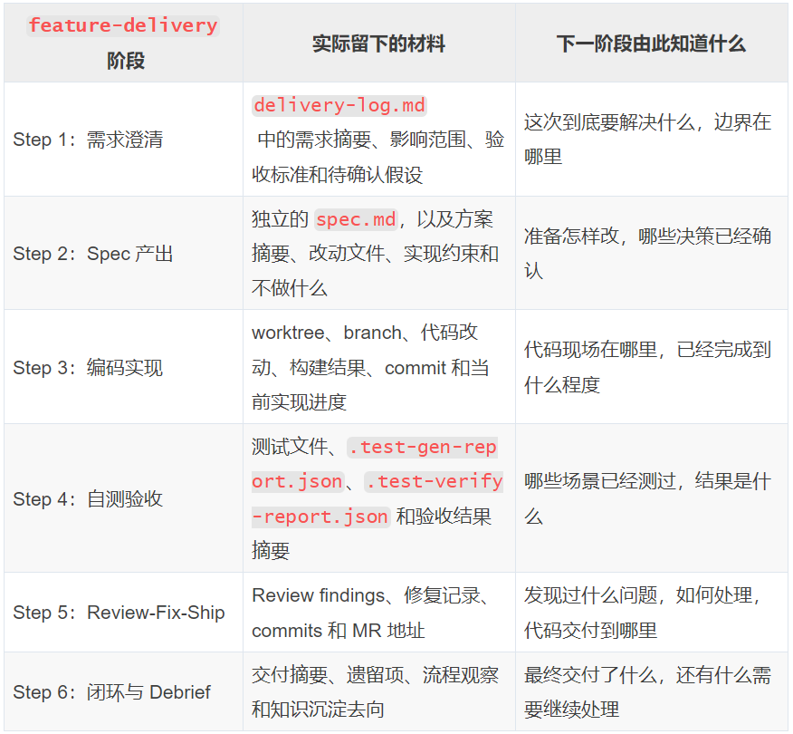
这些材料并不都挤在同一份“万能文档”里。spec.md 保存方案正文，worktree 保存真实代码现场，测试报告留在实际执行位置，delivery-log.md 则按照六个阶段持续追加，把分散的事实串成一条人和 Agent 都能读懂的交付记录。另有一份 state.json 只记录当前阶段、状态、worktree 和相关路径，负责把恢复者带到正确的位置。
这些材料先把任务从对话里拿出来，下一步才是规定它们怎样成为阶段之间可以接续的输入和输出。
4.2 Workflow 把这些材料变成阶段之间的交接协议
只把材料保存下来还不够。可恢复的 Workflow 还要把相邻阶段之间的关系写清楚：每个阶段从哪些已经确认的事实开始，结束时必须留下什么。
对一个节点来说，输入回答“我凭什么开始”，输出回答“下一位凭什么接手”。需求澄清以原始诉求和项目现场为输入，输出范围、验收标准和待确认假设；Spec 以这些确认结果为输入，输出设计方案和实现约束；编码再以 Spec 为输入，输出 worktree、commit 和构建结果。测试以当前代码和必测场景为输入，输出测试资产与报告；Review 以 diff 和测试证据为输入，输出 findings 与修复记录；交付以通过检查的代码和记录为输入，输出 MR、交付摘要与遗留项。
Workflow 不只规定执行顺序，还规定交接合同：
输入必须来自已经确认的任务事实或上一步产物，不能从聊天记忆里猜；
输出必须落到文档、代码现场或报告，不能只留一句总结；
输出不满足下一阶段需要时，流程停在当前节点，不能乐观推进。
只要这些输入和输出还在，执行者就可以更换。新的 Agent 读取本阶段输入，完成本阶段职责，再留下下一阶段需要的输出。真正可恢复的不是会话，而是这条交接链。
判断这样的 Workflow 是否真的可恢复，可以问问自己的 Agent 这样一个问题：
假设每个阶段结束后都立即换成一个全新的 Agent，它还能不能只依靠项目里的状态、文档和真实工件继续工作？
如果不能，说明流程仍然依赖上一段对话，只是表面上被拆成了多个步骤。
4.3 State 是书签，文档才是任务正文
文档解决了“任务是什么、已经做过什么”，但新的 Agent 还需要快速知道应该从哪里开始读。长任务通常还需要一份机器可读的状态记录。
Wish 用 state.json 保存当前阶段、执行状态和 worktree 等机器可读信息，用 delivery-log.md 记录人和下一次会话都能理解的任务事实。它们的关系可以简单理解为：
文档：保存任务内容State：保存任务位置Workflow：规定内容怎样向前演进
state.json 不需要重新复制需求、方案和测试正文。它更像一本书里的书签，只需要把新的执行者带到正确的位置。
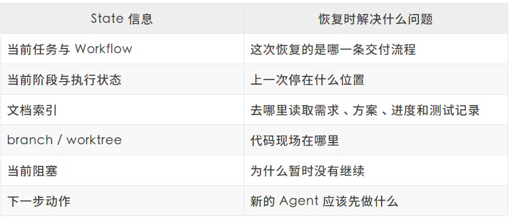
每完成一个有意义的阶段，Agent 都应该同步更新相关文档和 State。这样，即使当前会话立即终止，下一次运行也可以沿着一条稳定的路径恢复：
查找尚未完成的任务；
读取 State，定位当前阶段；
根据文档索引恢复需求、方案、进度和测试上下文；
查看当前 branch、worktree 和代码状态；
从记录下来的下一步继续推进；
推进过程中继续更新文档和 State。
这和恢复 Session 有一个很重要的区别：恢复 Session 是试图找回上一段对话；恢复任务则是根据项目中的持久化信息重建工作上下文。Session 能恢复当然更好，但它只能作为辅助。真正的恢复能力应该建立在项目文档和任务状态上。
文件名和目录可以不同，但一个可恢复的任务至少应该留下：
当前目标与已经确认的假设；
已完成、正在进行和剩余的工作；
精确的代码位置与当前工作区；
已经执行的测试和当前进度；
当前阻塞以及下一步动作。
从这个角度看，Wish 的可恢复性并不来自某一个特别强的 Agent，而是来自一套所有 Agent 都能读写的项目状态。Agent 可以失忆，但项目不能失忆。
05
可信上下文、可执行约束和可恢复流程，落地时不应该先被设计成一套完整平台。更合适的做法，是让 Harness 在真实任务中形成反馈回路：先完成任务，留下可观测的运行证据，再根据证据决定增加什么、打薄什么。
这里最容易犯的错误，是把另一个项目已经长成的 Harness 直接复制过来。问题并不在于“分阶段交付”或“多仓运行”只会出现在某一个项目，而在于同一种工程目标，到了不同项目会落在完全不同的位置：
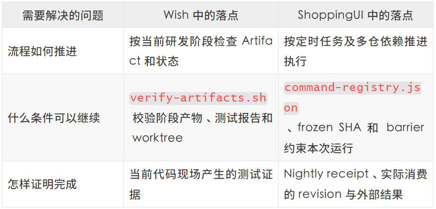
换一个项目，工作流节点、Gate 条件、测试脚本、证据格式、权限边界和外部 readback 都要重新确认。可以复用的是发现问题和修复问题的方法，不能照搬的是已经绑定旧项目结构的实现。
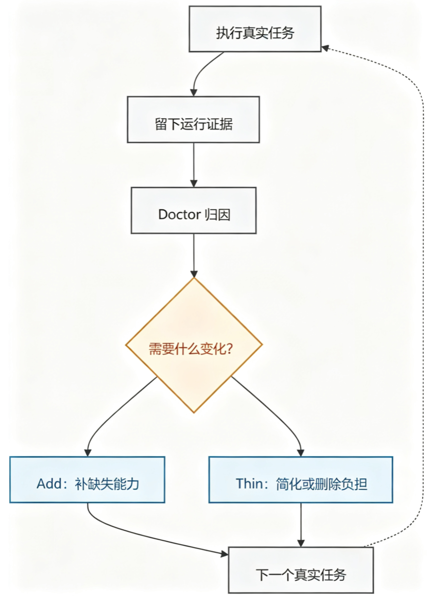
Harness 会随着真实问题增加能力，也会因为长期没有价值、重复实现或频繁误伤而被删减。只会增加、不会减少的 Harness，最后很容易变成新的负担。
5.1 先跑一个最小 MVP
先选一个真实、简单、可以在短时间内验收的任务。任务描述只需要包含目标、范围、约束和完成条件：
这次具体要改什么。（目标）应该读取哪些代码、契约和项目规则，涉及哪些模块。（范围）哪些操作不能做，哪些动作需要确认。（约束）必须通过什么编译或测试，留下什么结果。（完成条件）
最小并不等于忽略项目事实。开始前仍然要确认这次任务真正会经过的适配点：从哪个节点开始、调用哪个构建或测试入口、什么证据算完成、哪些动作需要审批、外部写入如何 readback。只确认本次任务用得到的部分，不为整个项目预先建模。
第一轮的目的是建立基线：在没有额外脚手架的情况下，当前模型、项目代码和已有工具能把任务做到什么程度？
如果现有流程已经能把任务可靠地完成，就不要为了“以后可能有用”额外增加机制。如果失败了，也不要马上加多 Agent、长 Prompt 或复杂工作流。先保留任务已经自然产生的证据：
Agent 实际修改的 diff；
运行过的测试和构建结果；
人工纠正了什么；
哪一步需要人接管；
最终结果和预期结果差在哪里。
这些具体问题，才是 Harness 下一步应该生长的地方。到了下一个项目，可以直接带走任务模板、运行证据的基本结构和 Doctor 原则；具体的工作流、脚本和 Gate 仍然从新项目的第一个真实任务里重新长出来。
Harness 只应该解决已经出现或能够明确验证的问题，而不是提前为想象中的失败建设一套平台。
5.2 观测整个执行链，再生成项目自己的 Harness
把 Harness 移植到一个新项目时，不要先问“Runner 怎么写、JSON 放哪里”，而要先问：一次真实任务如果出错，我们能不能看见它在哪一层出了问题？需要观测的不是某一条固定工作流，而是任务从输入到现实结果的整个执行链。
这里说的“整个执行链”，不是保存每一句对话和每一次工具调用，而是覆盖几类会影响判断的关键事实：
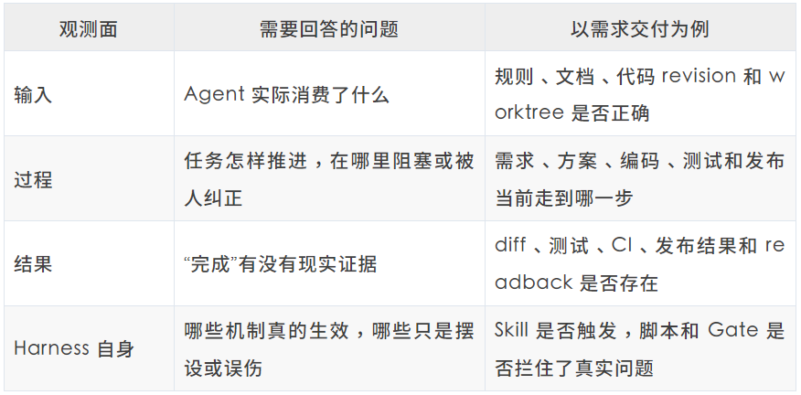
feature-delivery只是其中一个例子。它适合把需求评审、方案、编码、测试、发布和体验验收串起来，因此也自然提供了几个观测点；换成排障、重构、知识维护或 Nightly，多仓 revision、日志、产物和外部回读就会成为新的观测点。要复用的是这几类问题，不是固定的阶段和字段。
第一版也不需要专门建设观测平台。可以把最小要求直接写进项目正在使用的 SOP 或 Skill，由 AGENTS.md 负责把任务路由过去：到达关键节点时记录当前状态和下一步，引用 Git、测试、CI 或目标系统已经产生的证据，并在遇到阻塞或人工纠正时留下原因。这个记录可以是 state.json、交付日志、Issue 或 CI 回执；它只是把证据串起来的索引，不代替证据本身。
这样，一套适合新项目的 Harness 会从真实任务里逐步生成：先沿现有流程跑一次，找出看不见、接不上或验不了的地方；重复出现的人工纠正，沉淀成规则、Skill 或脚本；需要机械保证的检查，再下沉成 Gate；只有稳定流程开始高频、无人值守地运行时，才需要 Runner、统一 receipt 或观测平台。
迁移时可以直接带走的是观测问题、状态语义、证据原则和 Add/Thin 方法；需要在新项目里重新生成的，是任务入口、工作流节点、工具命令、证据位置和 Gate 实现。观测积累下来以后，先从任务轨迹和运行证据定位问题；当验收标准稳定，再把真实失败沉淀成可以重复运行的 Case，最后根据这些信号做根因修复。
5.3 从观测到根因修复
真实任务出现问题以后，最容易想到的事情就是继续修改 Prompt：
“下次请认真阅读文档。”
“下次一定要运行完整测试。”
“下次不要修改范围之外的文件。”
更有效的做法，是让 Agent 基于任务轨迹和运行证据，定位问题最早出现在哪一层，再提出修复方向。
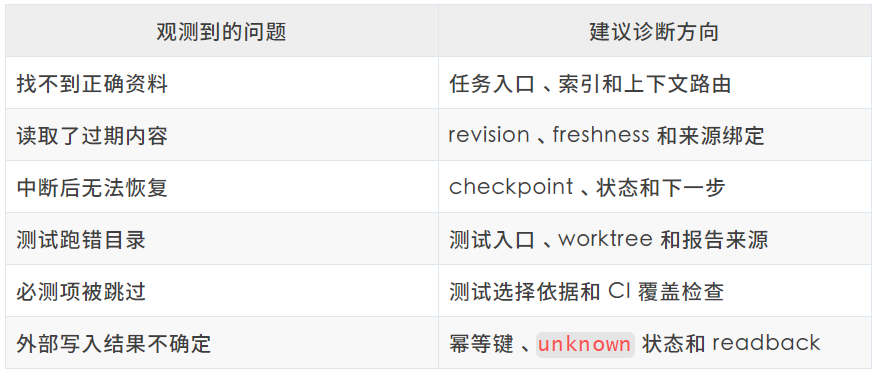
这张表只是诊断入口，不是固定修复方案。同一个现象可能对应不同根因，还需要结合项目代码、配置和运行记录，确认问题究竟发生在任务、上下文、工具、流程、Gate 还是环境。
一次最小诊断只需要四步：
读取任务输入、revision、worktree、执行命令、测试结果和人工纠正。
沿执行链找到第一个偏离预期的位置。
区分已确认事实、合理推断和未验证信息，给出一到两个修复方向。
由 Agent 和用户确定具体方案，再用原来的失败路径和一条正常路径验证。
在 Wish 的实践里，我就遇到过测试报告与目标 worktree 不一致的问题：测试虽然是绿的，却不能证明当前代码通过了验证。我没有继续给 Agent 增加“注意测试目录”的提醒，而是让它对照 state.json、报告目录和脚本入口回查执行链。确认原因后，我们才把一致性检查放进 verify-artifacts.sh，让同类问题以后能够被脚本直接识别。
如果问题无法复现或证据不足，就继续观测，不急着修改 Harness。只有同类问题反复出现、判断条件也已经稳定，才考虑将它沉淀为测试、脚本检查或 Gate。
06
模型能力增强后，今天的长 Prompt、Skill 路由、Hook 和某些检查可能变得多余，Harness 组件隐含了对当前模型能力的判断，不应该被当成永久资产。
但这也不意味着我们要定期专门证明某条控制是否还在“发挥作用”。更实际的判断来自日常任务的观测：重复失败、缺少证据和无法恢复，说明需要 Add；长期无人消费、重复实现、频繁误伤和明显负收益，说明应该 Thin。
相对稳定的不是某一套目录、工具或配置，而是几条判断原则：
要知道哪些事实来自权威来源，并检查运行实际消费了什么；
任务中断后，能够从可信状态继续；
权限和不可逆边界不能由模型自行放宽；
完成标准要有物理证据和现实回读；
是否 Add 或 Thin，则由真实任务的运行证据决定。
可信上下文、可执行约束和可恢复流程，是我高频使用 Coding Agent 时最常补、也最常回看的三件事。具体的目录、工具、权限、测试和外部系统都会随项目变化，落点只能在迭代中逐步形成。
快速接入不同项目时，可以先选一条真实任务，跑通最小闭环。执行中凡是需要 Agent 猜测、无法恢复或无法验收的地方，都是下一轮需要补上的能力；随着项目迭代，已经不再影响结果的规则则应该从 Harness 中删掉，避免它们反过来成为 Agent 的工作瓶颈。
参考资料
OpenAI, Harness engineering（https://openai.com/zh-Hans-CN/index/harness-engineering/）
Anthropic, Effective harnesses for long-running agents：（https://www.anthropic.com/engineering/effective-harnesses-for-long-running-agents）
Anthropic, Effective context engineering for AI agents：（https://www.anthropic.com/engineering/effective-context-engineering-for-ai-agents）
OpenAI, Evaluate agent workflows：（https://developers.openai.com/api/docs/guides/agent-evals）
Boris Cherny, Building Claude Code：（https://www.youtube.com/watch?v=qyPCVqFUyDo）
感谢你读到这里，不如关注一下？👇